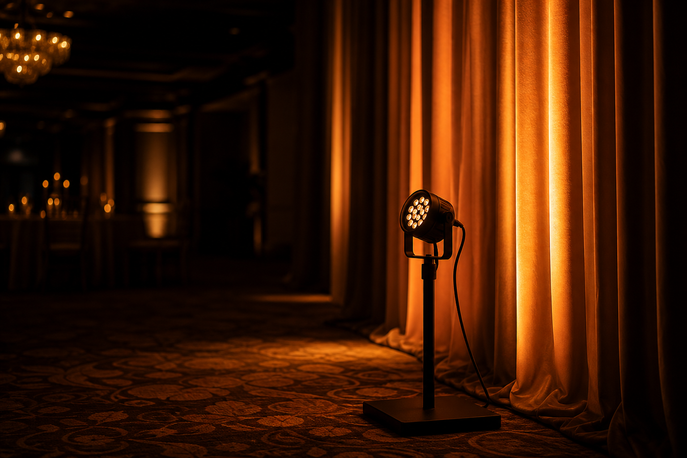

You can rent a truck of gear and still miss the five things that save most shows. This isn't a catalog. It's the short list we won't leave the shop without.
1. A wireless mic system with a labeled spare
Primary handheld or lav, plus a second channel already patched. Dead batteries and RF hits are normal. Looking confused on stage is optional.
2. Playback you can trust
Walk-in music, videos, and stingers on a dedicated machine — not the presenter's laptop that also has email open. Test the audio path to the PA before doors.
3. A real mixing console (right-sized)
Even a compact digital desk beats a consumer Bluetooth speaker daisy-chain. You need separate control for mics, playback, and program so one doesn't bury the other.

4. Lighting that serves faces and the room
Speakers need to be seen. Guests need to move without tripping. A few intentional fixtures beat a dark room with one spotlight and a prayer.
5. Cable, gaff, and backups that aren't on the quote
Adapters, spare XLRs, a second HDMI path, gaff in venue-safe colors. The unglamorous kit is what keeps the glamorous kit working.
If budget is tight, cut décor lighting before you cut audio redundancy. Guests forgive a simpler look. They don't forgive silence on the vows or the ask.
Equipping your next event?
Let's talk about what you actually need — not a padded gear list.
Start a project